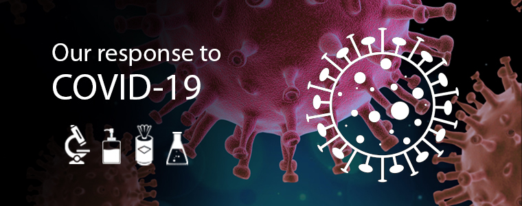

1 / 3

2 / 3

3 / 3
Ppk Pelagat telah ditubuhkan pada 23 Disember 1975.
Mengikut Akta Pertubuhan Peladang 1974 dan didaftarkan pada 1 April 1980 (No Daftar:PPK 099).
Kawasan pengandalian meliputi 4 mukim dengan keluasan 54.8 batu persegi (87.68km) iaitu mukim Pelagat, mukim Bukit Puteri, Mukim Kuala Besut dan mukim Pengkalan Nangka .
PPK Pelagat mempunyai 25 Unit Peladang dengan pecahan mengikut mukim.
PPK Pelagat ditubuhkan bertujuan memberi latihan dan meningkatkan taraf ekonomi serta sosial kepada peladang-peladang dibawah pengendaliannya.